NẠP CHƯƠNG TRÌNH/GỠ LỖI CHO VBLUNO V2 BẰNG pyOCD VÀ OpenOCD TRONG MÔI TRƯỜNG GNU_ARM + ECLIPSE
0. Lưu ý:
Bài viết này tiếp tục cho nội dung tại Getting Start --> Using mbed-OS --> GNU ARM Embedded & Eclipse IDE
1. Cài đặt
1.1. Cài đặt pyOCD
-
pyOCD là một chương trình mã nguồn mở cho phép nạp chương trình và gỡ lỗi cho các vi điều khiển ARM Cortex-M sử dụng CMSIS-DAP (DAPLink) interfaces.
-
pyOCD được xây dựng bằng ngôn ngữ lập trình Python, và dĩ nhiên nó hỗ trợ đa nền tảng: Windows, Linux và OSX.
-
Tham khảo cách cài đặt tại ĐÂY
-
Sau khi cài thành công, bạn thử gõ pyocd-flashtool tại Terminal, nếu hệ điều hành không nhận diện được đường dẫn, bạn cần bổ sung đường dẫn của pyOCD vào biến môi trường PATH.

1.2. Cài đặt OpenOCD
-
Trong khi pyOCD được mbed team thiết kế riêng cho CMSIS-DAP (DAPLink) interface thì OpenOCD là một phần mềm có chức năng tương tự nhưng có thể hoạt động với CMSIS-DAP và rất nhiều công cụ khác như: Jlink, ST-Link, Ulink, redbee-usb,….
-
Nếu bạn đã cài đặt GNU ARM Eclipse plugin cho Eclipse như đã hướng dẫn tại
Getting Start --> Using mbed-OS --> GNU ARM Embedded & Eclipse IDE, thì OpenOCD đã được cài đặt sẵn vào máy tính của bạn. Nếu bạn sử dụng Windows OS, có thể OpenOCD sẽ được cài vào đường dẫn như hình sau
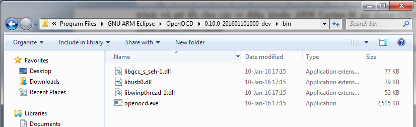
- Bạn cũng có thể cài đặt OpenOCD từ ĐÂY
1.3. Cài đặt thêm các Device Packs
Device packs của nhà sản xuất chip giúp GNU ARM Eclipse plugin có thể hiển thị các thông tin về ngoại vi, thanh ghi, bộ nhớ,… của chip trong khi chúng ta tiến hành debug. Bạn cài đặt theo các hình sau
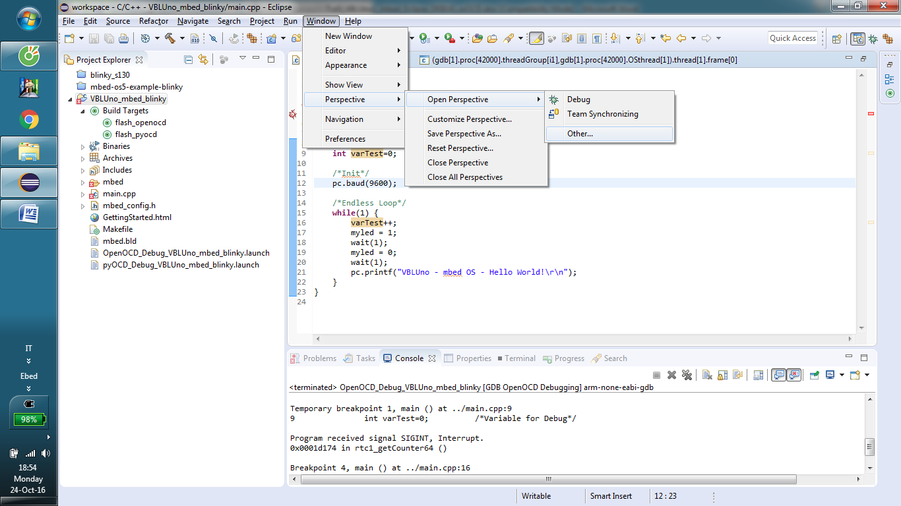
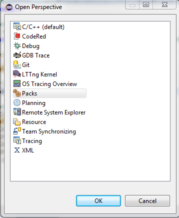
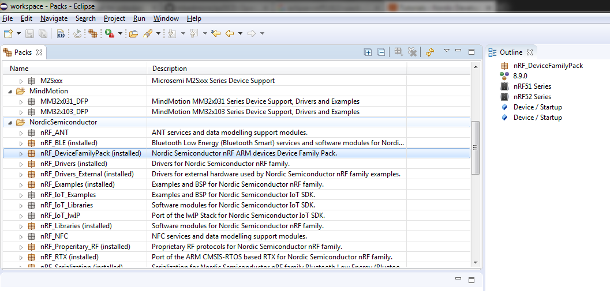
2. Hướng dẫn nạp/gỡ lỗi cho VBLUno trên GNU ARM Eclipse.
2.1. Nạp chương trình
- Sửa Makefile:
Bổ sung thêm từ dòng 128 đến 134
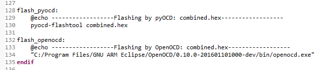
Trong đó dòng 134 có nội dung là:
“C:/Program Files/GNU ARM Eclipse/OpenOCD/0.10.0-201601101000-dev/bin/openocd.exe” -f “C:/Program Files/GNU ARM Eclipse/OpenOCD/0.10.0-201601101000-dev/scripts/interface/cmsis-dap.cfg” -f “C:/Program Files/GNU ARM Eclipse/OpenOCD/0.10.0-201601101000-dev/scripts/target/nrf51.cfg” -c “program combined.hex verify reset exit 0x0”
- Tạo target:
Tạo 2 target với tên là flash_pyocd và flash_openocd:
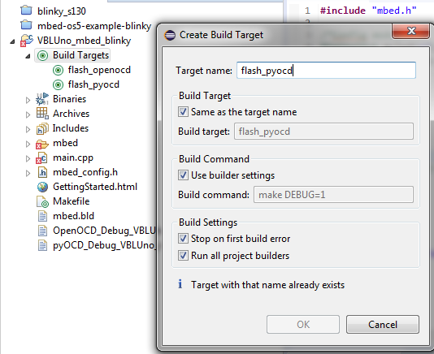
- Flash chương trình xuống mạch VBLUno
Sau khi build project, để nạp chương trình cho mạch bằng pyOCD, bạn nhấp đúp vào target flash_pyocd. Tương tự cho OpenOCD.
Hình dưới đây xuất hiện khi nạp bằng pyOCD

Hình dưới đây xuất hiện khi nạp bằng OpenOCD
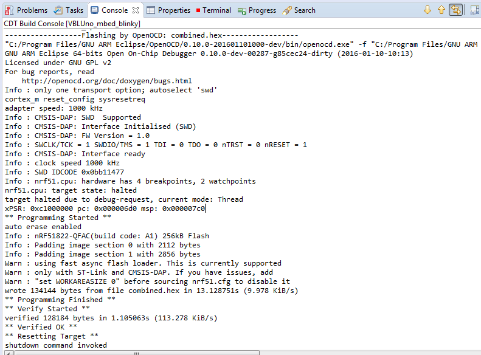
Sau khi nạp xong thì mạch sẽ được reset và chương trình bắt đầu chạy.
2.2. Debug với pyOCD
- Sửa Makefile
Chú ý dòng 68, 69 trong hình sau
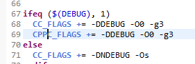
- Sửa Build command

-
Build lại project
-
Cấu hình debug
Chuột phải tại project -> Chọn Debug Configurations
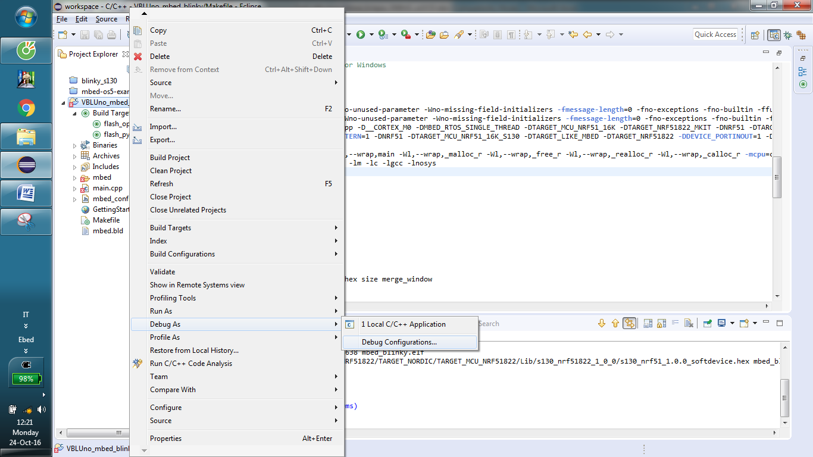
Nhấp đúp vào GDB pyOCD Debugging để tạo cấu hình debug mới:
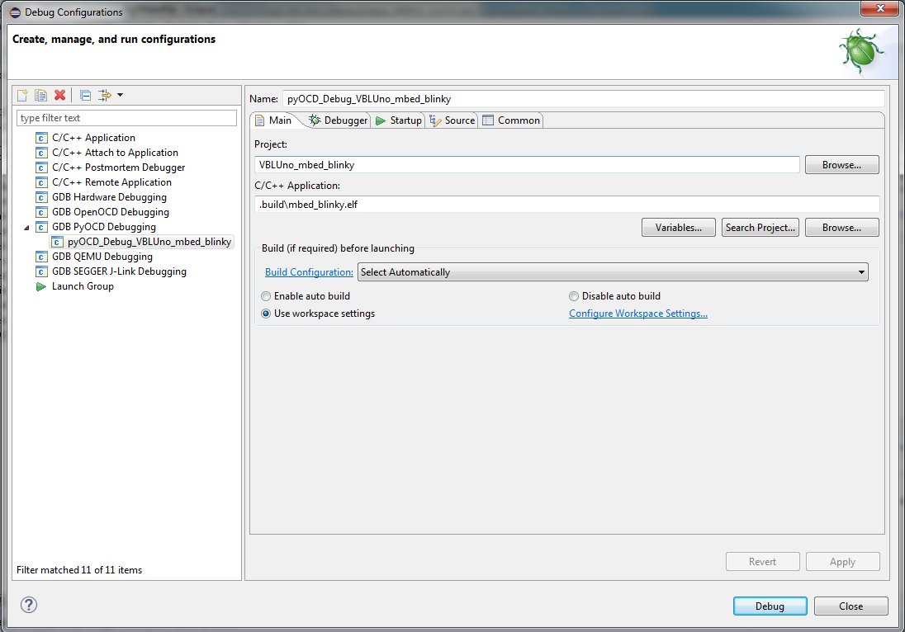
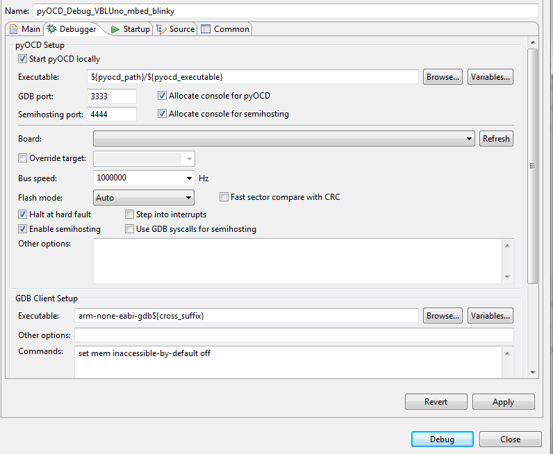
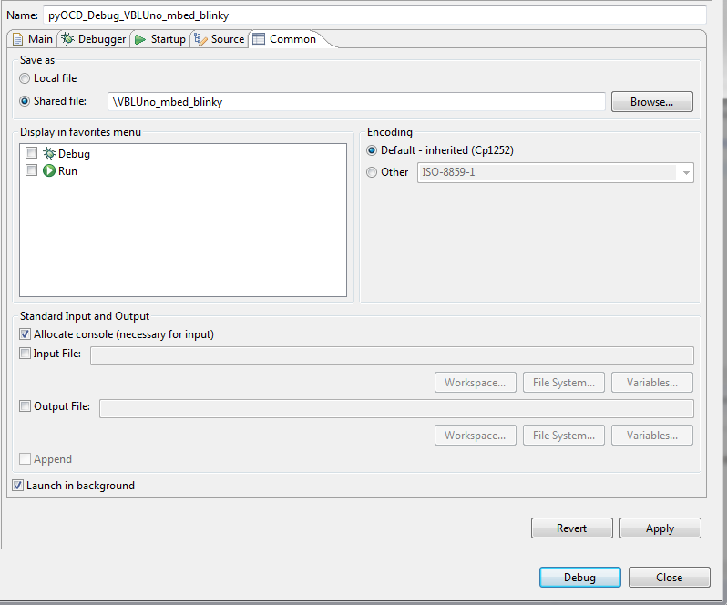
- Nhấn Debug để bắt đầu quá trình debug
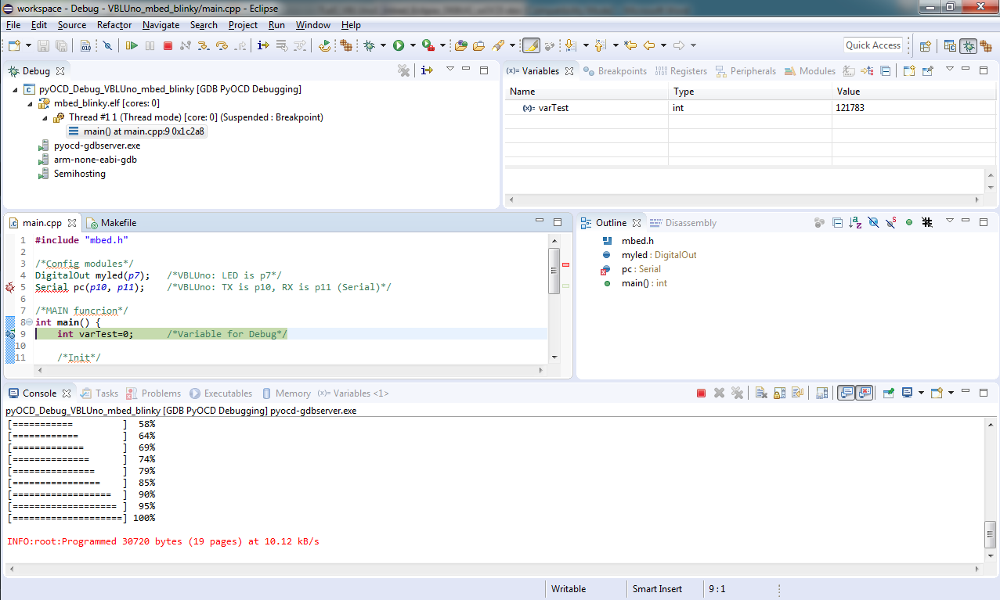
pyOCD hỗ trợ đầy đủ các tính năng debug thông thường như: Run, Pause, Stop, Step Into, Step Over, Run to Line, Breakpoint, Watch biến và biểu thức,… Ngoài ra còn hỗ trợ xem giá trị Registers, Memory.
Một số hình ảnh minh họa:
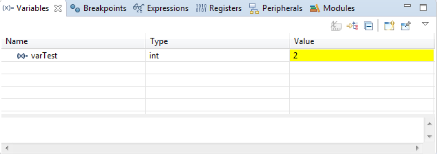
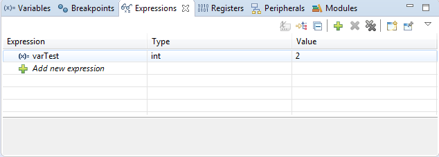
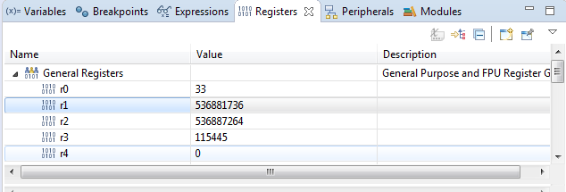
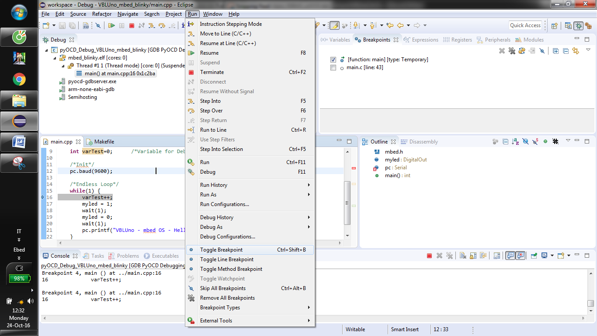
2.3. Debug với OpenOCD
Thực hiện tương tự như với pyOCD, chú ý cấu hình theo các hình sau:


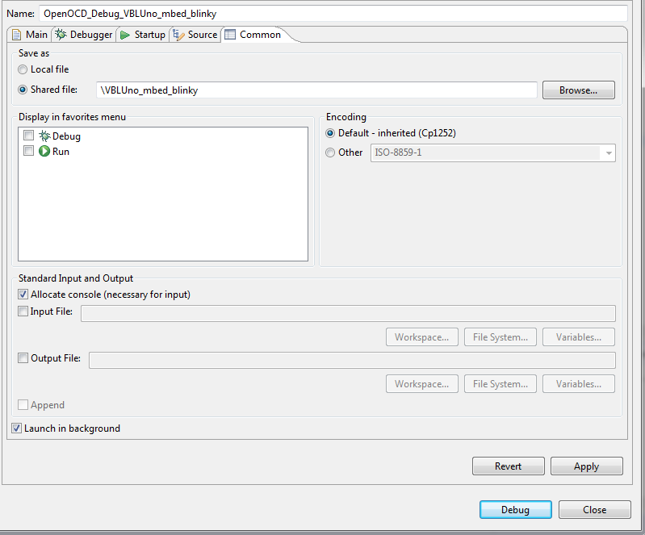
OpenOCD cũng hỗ trợ các tính năng debug như pyOCD
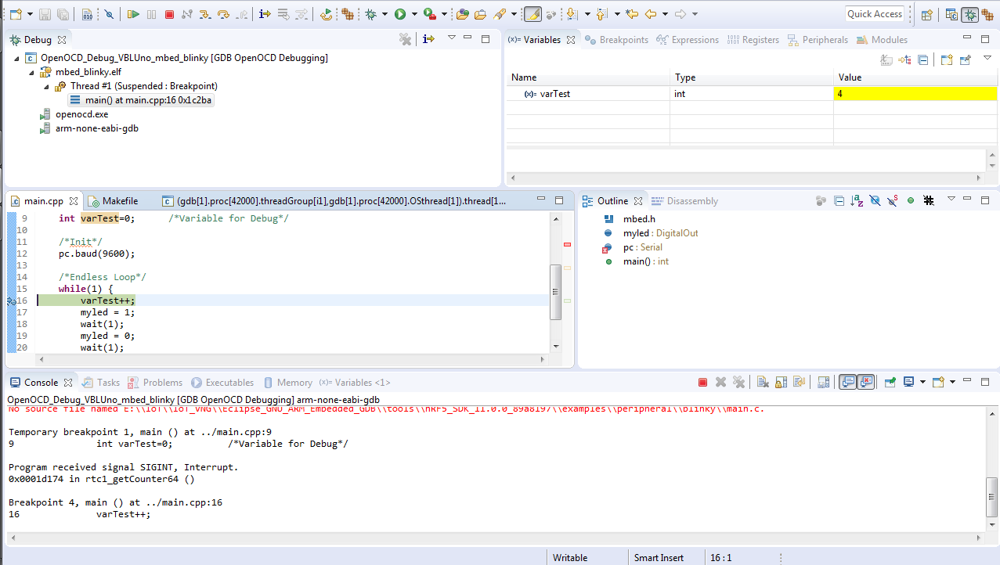
- Có thể thấy, Eclipse + GNU ARM Eclipse plugin + GNU ARM Embedded toolchain + pyOCD, OpenOCD hỗ trợ developers phát triển ứng dụng cho bo mạch VBLUno một cách dễ dàng. Một môi trường lập trình hỗ trợ GUI, cho phép nạp và gỡ lỗi chương trình một cách thuận tiện sẽ giúp nâng cao hiệu suất làm việc của các lập trình viên.
Mọi thắc mắc hoặc ý kiến đóng góp bạn có thể trao đổi tại đây:
https://www.facebook.com/bleviet/messages/
https://github.com/VNGIoTLab/mbed_for_VBLUno-CMSIS-DAP/issues